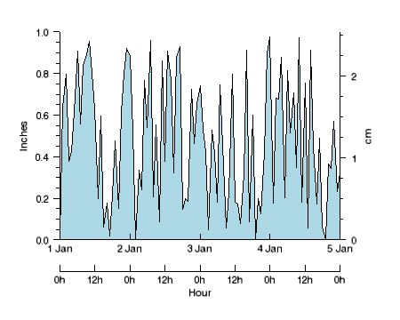

Search IndexThe AXIS function adds an axis to an existing IDL Graphic.

The following lines create the graphic shown at the top of this topic.
time = TIMEGEN(START=JULDAY(1,1,2000,0,0,0), $
FINAL=JULDAY(1,5,2000,0,0,0), UNITS='Hours')
data = RANDOMU(seed, N_ELEMENTS(time))
p = PLOT(time, data, MARGIN=[0.15,0.25,0.15,0.1], $
AXIS_STYLE=1, FILL_COLOR="light blue", $
FILL_BACKGROUND=1, FILL_LEVEL=0, $
YRANGE=[0,1], YTITLE='Inches', $
XTICKINTERVAL=1, XMINOR=0, YTICKDIR=1, $
XSTYLE=1, XTICKFORMAT='(C(CDI,1x,CMoA))')
; Insert another X axis with time in hours.
xaxis = AXIS('X', LOCATION=[0,-0.15], $
TITLE='Hour', $
TICKINTERVAL=0.5, $
MINOR=0, $
TICKFORMAT='(C(CHI),"h")')
; Insert another Y axis with height in centimeters.
yaxis = AXIS('Y', LOCATION=[time[-1],0], $
TITLE='cm', $
TICKDIR=0, $
TEXTPOS=1, $
TICKVALUES=[0,1,2]/2.54, $
TICKNAME=['0','1','2'])
graphic = AXIS(Direction)
The AXIS function returns a reference to the created graphic. Use the returned reference to manipulate the graphic after creation by changing properties or calling methods.
Set this argument to a string or an integer giving the axis direction. Possible values are:
| • | 0 or 'X' - Create an X axis. |
| • | 1 or 'Y' - Create a Y axis. |
| • | 2 or 'Z' - Create a Z axis. |
The LOCATION property may be used to set the axis location.
Properties marked as are applied only during the initial creation of the graphic. All other properties can be set during creation, or retrieved or changed after creation.
By default anti-aliasing is used when drawing lines. Set this property to 0 to disable anti-aliasing.
Set this property to a string or RGB vector giving the axis color. If the COLOR and the TEXT_COLOR were previously the same, then setting COLOR will also set TEXT_COLOR to the same value. The default is "black".
An integer or string giving the linestyle to be used for tickmarks. For the list of linestyle index values, see Formatting IDL Graphics Symbols and Lines.
Set this property to 1 to hide the graphic. Set HIDE to 0 to show the graphic.
Set this property to a vector [x, y, z] giving the location of the new axis in data coordinates. When drawing an X axis, the x coordinate is ignored, similarly the y and z coordinates are ignored when drawing their respective axes. The z coordinate applies only to three-dimensional graphics.
Set this property to specify a logarithmic axis. The minimum value of the axis range must be greater than zero.
An integer representing the number of major tick marks. The default value is -1, specifying that IDL will compute the number of tickmarks. Setting MAJOR equal to 0 suppresses major tickmarks entirely.
An integer representing the number of minor tick marks. The default value is -1, specifying that IDL will compute the number of tickmarks. Setting MINOR equal to 0 suppresses minor tickmarks entirely.
A string that specifies the name of the graphic. The name can be used to retrieve the graphic using the brackets array notation. If NAME is not set then a default name is chosen based on the graphic type.
Set this property to 1 to show text labels or to 0 to hide text labels.
A floating point scale ratio specifying the length of minor tick marks relative to the length of major tick marks. The default value is 0.5, specifying that the minor tick mark is one-half the length of the major tick mark.
Set this property to the graphic to which the axis should be associated. If TARGET is not specified then the current graphic will be used.
A string or RGB vector containing the axis text color. The default value is the same color as the COLOR property.
Set this property to 1 to position the tick labels and axis title above the axis. The default is 0, below the axis.
Tip: The TICKDIR property may be used to control the direction of axis tick marks.
A value between 0 and 10 that specifies the line thickness of the plotted lines. The default value is 1.
Set this property to 1 to draw the tickmarks facing outwards. The default is 0, facing inwards.
Tip: The TEXTPOS property may be used to control the position of tick mark data values and axis titles.
A string specifying the IDL or system font for the tick labels and axis title.
A floating-point number representing the point size of the axis text. The default value is 12 points.
An integer or a string specifying the font style for the axis labels and title. Allowed values are: "normal" or "rm" (0), "bold" or "bf" (1), "italic" or "it" (2), and "bold italic" or "bi" (3).
A string, or an array of strings, in which each string represents a format string or the name of a function to be used to format the tick mark labels. If an array is provided, each string corresponds to a level of the axis. The TICKUNITS property determines the number of levels for an axis.
If the string begins with an open parenthesis, it is treated as a standard format string.
If the string does not begin with an open parenthesis, it is interpreted as the name of a callback function to be used to generate tick mark labels. This function is defined with either three or four parameters, depending on whether TICKUNITS is specified.
If TICKUNITS is not specified:
| • | The callback function is called with three parameters: Axis, Index, and Value, where: |
| • | Axis is the axis number (0 for X axis, 1 for Y axis, 2 for Z axis) |
| • | Index is the tick mark index (indices start at 0) |
| • | Value is the data value at the tick mark (a double-precision floating point value) |
If TICKUNITS is specified:
The callback function is called with four parameters: Axis, Index, Value, and Level, where:
| • | Axis, Index, and Value are the same as described previously. |
| • | Level is the index of the axis level for the current tick value to be labeled. (Level indices start at 0.) |
A floating-point number indicating the interval between major tick marks for the first axis level. The default value is computed according to the axis range and the number of major tick marks (MAJOR). If this property is set then the MAJOR property is ignored.
For example, if TICKUNITS = ['S', 'H', 'D'], and TICKINTERVAL = 30, then the interval between major ticks for the first axis level will be 30 seconds.
An integer that indicates the tick layout style to be used to draw each level of the axis. Set this property to 0 (the default) to draw the axis line, tick marks, and tick labels. Set to 1 to only draw the labels. Set to 2 to draw a box around the tick labels.
Note: For all tick layout styles, at least one tick label will appear on each level of the axis (even if no major tick marks fall along the axis line). If there are no major tick marks, the single tick label will be centered along the axis.
A floating point value that specifies the length of each major tick mark, measured in normalized units. The default tick mark length is 0.05. Tick lengths of less than 0.25 are in arbitrary fixed-width units and do not scale with the graphic. Tick lengths of 0.25 or greater are normalized relative to the width (or height) of the graphic, and will scale with the graphic. A tick length of 1 will produce tick marks that stretch across the entire graphic.
A string array of up to 30 elements that controls the annotation of each tick mark. Set this property to a null string to set the tick labels back to their default values.
A string (or a vector of strings) indicating the units to be used for axis tick labeling. If more than one unit is provided, the axis will be drawn in multiple levels, one level per unit. The order in which the strings appear in the vector determines the order in which the corresponding unit levels will be drawn. The first string corresponds to the first level (the level nearest to the primary axis line).
Valid unit strings include: "" (the default), "Years", "Months", "Days", "Hours", "Minutes", "Seconds", or "Time".
If any of the time units are utilized, then the tick values are interpreted as Julian date/time values. Note that the singular form of each of the time value strings is also acceptable (for example, TICKUNITS = 'Day' is equivalent to TICKUNITS = 'Days').
Note: Julian values must be in the range -1095 to 1827933925, which corresponds to calendar dates 1 Jan 4716 B.C.E. and 31 Dec 5000000 C.E., respectively.
An array of tick mark locations. If TICKVALUES is set to 0 (the default value), IDL computes the tick values based on the axis range and the number of major ticks.
A string representing the title of the specified axis. You can also add Greek letters and mathematical symbols using a TeX-like syntax. These symbols need to be enclosed within a pair of "$" characters. See Adding Mathematical Symbols and Greek Letters to the Text String for details on the available symbols.
An integer between 0 and 100 that specifies the percent transparency of the axis. The default value is 0.
Set this property to an IDL variable of any data type.
This property retrieves a reference to the WINDOW object which contains the graphic.
| 8.0 | Introduced |
| 8.1 |
Added the following properties: UVALUE, SHOWTEXT, TICKNAME, The THICK property was changed to accept a value between 0 and 10. Added the Delete method. |
IMAGE, SURFACE, Using IDL Graphics
AXIS AXIS AXIS AXIS AXIS AXIS AXIS AXIS AXIS AXIS AXIS AXIS AXIS AXIS AXIS AXIS AXIS AXIS AXIS AXIS AXIS AXIS AXIS AXIS AXIS AXIS AXIS AXIS AXIS AXIS AXIS AXIS AXIS AXIS AXIS AXIS AXIS AXIS AXIS AXIS AXIS AXIS AXIS AXIS AXIS AXIS AXIS AXIS AXIS AXIS AXIS AXIS AXIS AXIS AXIS AXIS AXIS AXIS AXIS AXIS AXIS AXIS AXIS AXIS AXIS AXIS AXIS AXIS AXIS AXIS AXIS AXIS AXIS AXIS AXIS AXIS AXIS AXIS AXIS AXIS AXIS AXIS AXIS AXIS AXIS AXIS AXIS AXIS AXIS AXIS AXIS AXIS AXIS AXIS AXIS AXIS AXIS AXIS AXIS